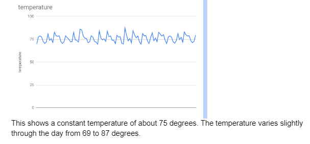
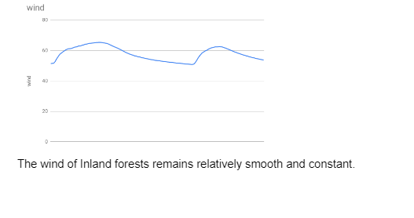
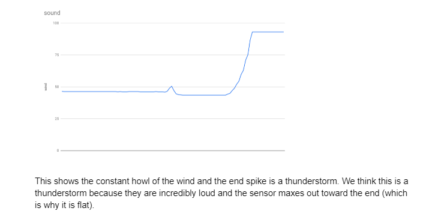
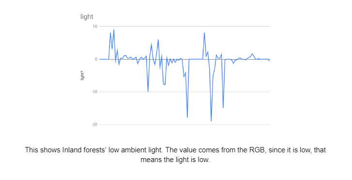
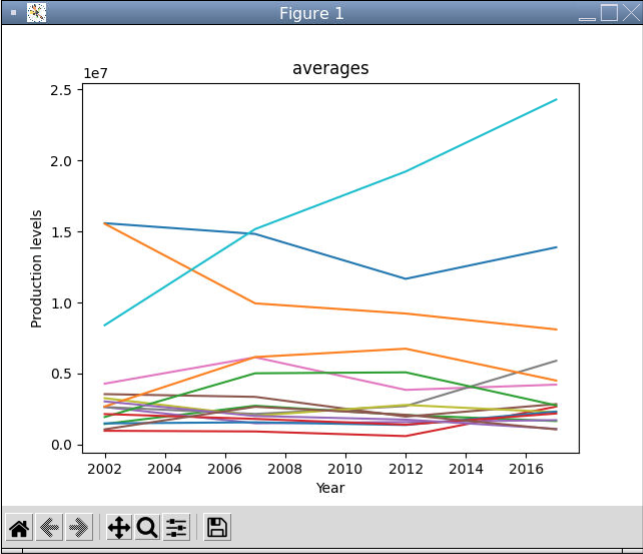
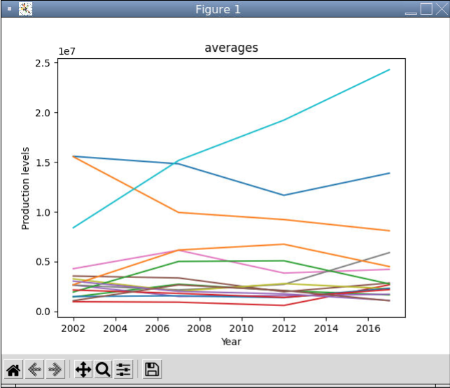

Home
Portfolio
About Me
This is my Portfolio Page!
Project One: PLTW 1.1.9 Python Iteration and Movement.


This is a python feelings simulation. It asks for an input of your feeling and then displays the feeling. The picture above is the output when the user says they are feeling embarrassed. We used if and while loops to make the code. Something I struggled with was trying to include movement which I eventually did by adding gifs which moved across the screen. I also struggled with this project because my computer did not really work so I had to do a lot of work at home. Something that was easy for me was finding angles and sizes for drawing because I am good at math. Overall I liked this project because it allowed me to express myself.
Project Two: PLTW 1.2.5 Python .


This is a python interpretation of Crossy Road. You use the up, down, left, right to control the user turtle. When the turtle hits the car the game ends and displays "you lost" when you get past the car the game ends with "you won". Something I struggled with was the collision function. The way I coded this was I had the computer find when the x and y were exactly the same. I liked this project because I could actually play it!
Project Three: Scratch Game.

This project is our interpretation of Doodle Jump. We used events, functions, changing costumes and backgrounds. I liked to do this project because block coding is easier to understand .
Project Four: PLTW Spreadsheets




Project Five: PLTW Honey Production Graphs.


 


The goal of this project was to find and graph the production levels of various bees from a given spreadsheet. A challenge I had with this project was that I could not figure out step 22. I was not sure how to find only the unique states and when I did figure that out my graph was not correct. I ended up fixing this with the help of my partner. It turns out my "plot" command was in the wrong loop.
Project 4.1.4 Netlogo.
My partner and I analyzed a netlogo simulation which represented the introduction of an invasive species in an ecosystem. We found that invasive species can reproduce very quickly, which leads to imbalances in the ecosystem. Often they replace a native species. The simulation lacked some of the complexities of a real world system like weather patterns and other organisms. .